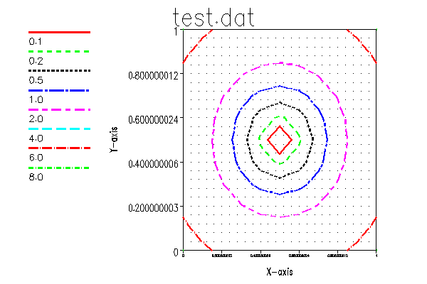

User Commands - cn (1)
NAME
cn(1f) - [M_xyplot] Draw a basic contour plot
(LICENSE:PD)
CONTENTS
Synopsis
Description
Options
Example
Author
License
SYNOPSIS
cn [ -f] FILE -xlabel STR -ylabel STR -d DEVICE -fn FILENAME
DESCRIPTION
Create a basic contour plot from a simple ASCII table of numeric
values. The file is assumed to be of the form x,y.z. The data
is not required to be on a grid.
OPTIONS
|
-d |
M_draw(3fm) device name (X11,pdf,svg, ...). Enter the
device name "list" for a list of available devices on
an otherwise valid command.
|
|
-f |
filename of format "X Y Z"
|
|
-fn FNAME |
| |
For file output, the default output name is cn.$DEVICE.
If a name is specified containing a period it is used
as-is. Otherwise the output file will be FNAME.$DEVICE
|
|
-xlabel |
| |
X-axis label. Default is "X"
|
|
-ylabel |
| |
Y-axis label. Default is "Y"
|
|
-title |
plot title. Defaults to input filename
|
|
-verbose |
| |
display plot information to stdout
|
|
-help |
display help text to stdout and exit
|
|
-version |
| |
display version to stdout and exit
|
|
EXAMPLE
Create a simple file with X,Y,Z values and draw plot
program demo_cn
use M_ContourPlot, only : contourlines
implicit none
integer,parameter :: NPTS=121
integer :: errCode
integer,parameter :: DBG=2
integer :: i,j,k
real,dimension(NPTS) :: x,y,z
character(len=:),allocatable :: cmd
!
k=0
do j=0,10
do i=0,10
k=k+1
x(k)=0.1*real(i)
y(k)=0.1*real(j)
end do
end do
!
z=(x-0.5)**2 + (y-0.5)**2
z(:)=16.0*z(:)
! write out the input values for plotting
open(unit=dbg, file=’test.dat’, status=’replace’, &
iostat=errCode, action=’write’, position=’rewind’)
!!write(DBG,’(I4,3F12.6)’) (k,x(k),y(k),z(k),k=1,npts)
write(DBG,’(3F12.6)’) (x(k),y(k),z(k),k=1,npts)
flush(unit=dbg)
! call plotting program
cmd=’cn test.dat -xlabel X-axis -ylabel Y-axis &
& -levels 0.1 0.2 0.5 1.0 2.0 4.0 6.0 8.0 ’
call execute_command_line(cmd)
call execute_command_line(cmd//’ -d pdf’)
call execute_command_line(cmd//’ -d svg’)
!
close(DBG,status=’delete’)
end program demo_cn
AUTHOR
John S. Urban
LICENSE
Public Domain
| Nemo Release 3.1 | cn (1) | December 18, 2021 |
Generated by manServer 1.08 from f554b6c4-ef12-4d0e-a722-b9cfea638ca6 using man macros.
